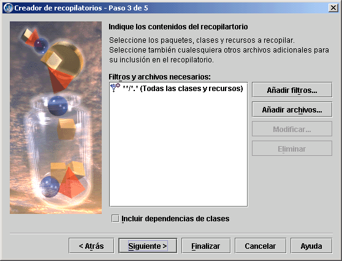
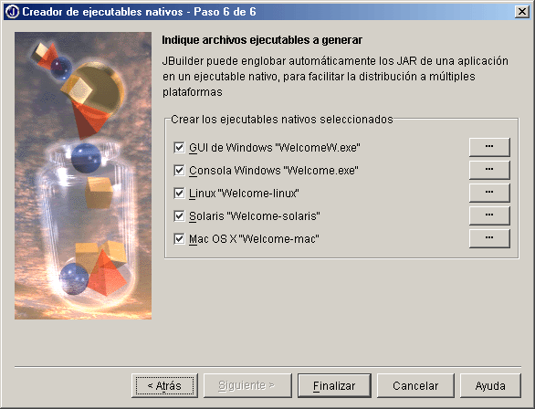
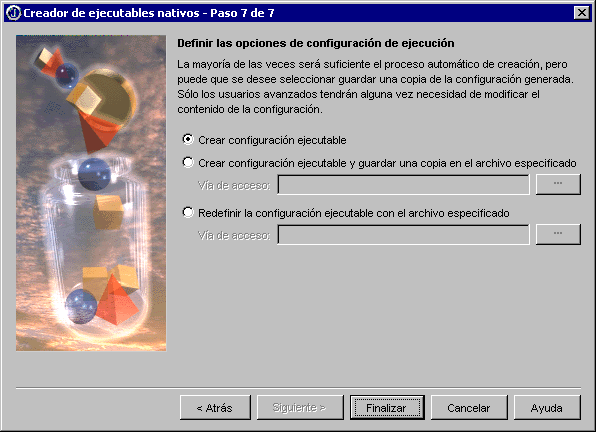

El Creador de recopilatorios permite distribuir los programas a otros usuarios con facilidad. Para ello, agrupa un conjunto de archivos y paquetes que constituyen la imagen de una aplicación o applet que se puede ejecutar. Se puede crear una amplia gama de recopilatorios como, por ejemplo, applets, aplicaciones, clientes de aplicaciones J2EE, archivos recopilatorios JAR ejecutables, documentación, archivos fuente, aplicaciones Web Start y archivos recopilatorios JAR de aplicaciones. Para acceder al Creador de recopilatorios, seleccione Asistentes|Creador de recopilatorios.

El Creador de ejecutables nativos agrupa automáticamente al archivo JAR de la aplicación con los englobadores de ejecutables nativos para Windows, Linux, Solaris y Mac OS X. Para abrir este creador, seleccione Asistentes|Creador de ejecutables nativos. Algunos de los tipos de recopilatorios del Creador de recopilatorios, como Aplicación y Ejecutable nativo, también realizan esta función.

Cuando se crea un recopilatorio JAR ejecutable con el Creador de recopilatorios o un ejecutable nativo con el Creador de ejecutables nativos es posible definir la configuración de ejecución para la apertura del archivo ejecutable. Si desea personalizar la configuración de un ejecutable, puede modificar la creada por JBuilder o crear otra.

Si desea más información, consulte:
Generación de aplicaciones con JBuilder Distribución de programas en Java
Generación de aplicaciones con JBuilder Adición de tipos de archivos no reconocidos como archivos de recursos genéricos
Generación de aplicaciones con JBuilder Uso del Creador de recopilatorios
Generación de aplicaciones con JBuilder Creación de ejecutables con el Creador de ejecutables nativos
Generación de aplicaciones con JBuilder Creación de archivos de configuración para ejecutables nativos